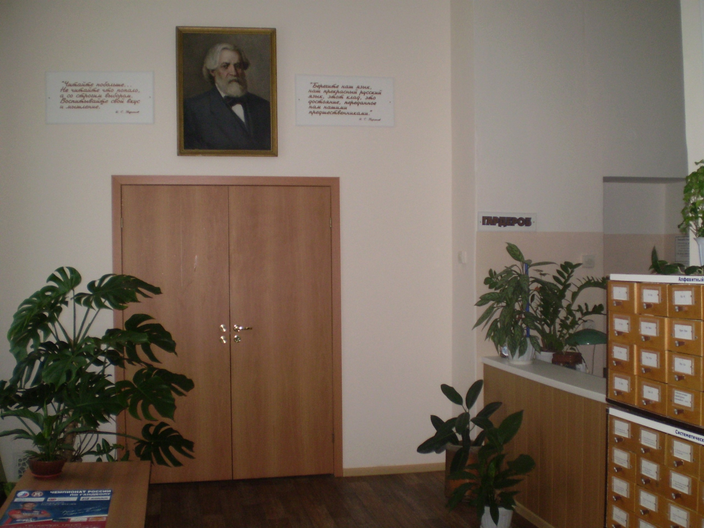
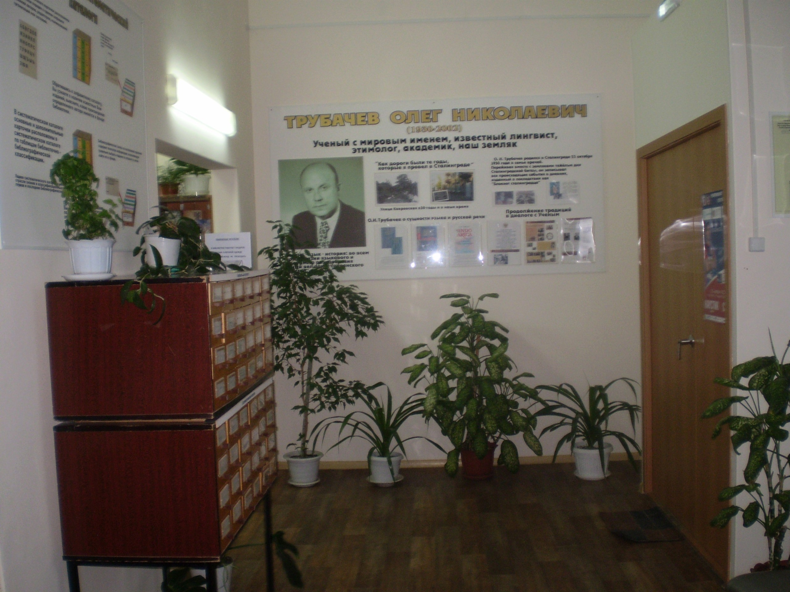

О библиотеке
Библиотека №3 активно работает с образовательными и правоохранительными учреждениями Ворошиловского района. Мы проводим разнообразные мероприятия для всех возрастных групп — от детей до ветеранов, организуем встречи с волгоградскими писателями и поэтами.
Особое внимание уделяем популяризации русской классической литературы и русского языка. Наша библиотека служит культурным центром, где каждый может найти что-то интересное для себя.
Мы стремимся развивать читательский интерес к произведениям отечественных и зарубежных авторов, знакомим посетителей с лучшими образцами классики и новинками издательского рынка.
История библиотеки
Библиотека-филиал № 3 имени Ивана Сергеевича Тургенева была основана 5 марта 1928 года. Это одна из старейших библиотек Волгограда, сохраняющая свои традиции на протяжении десятилетий.
Послевоенная история библиотеки началась в 1946 году, когда среди руин разрушенного Сталинграда ей было выделено небольшое помещение площадью всего 56 квадратных метров в сохранившемся финском домике.
Несмотря на скромные условия, библиотека уже тогда имела абонемент и передвижной фонд. Книжный фонд насчитывал 43 000 экземпляров, а число читателей достигало 4400 человек.
Наша деятельность
Библиотека активно сотрудничает с администрацией Ворошиловского района, которая неоднократно отмечала высокий уровень нашей работы с молодежью. Наши мероприятия регулярно освещаются в местных СМИ, включая газеты «Казачий круг» и «Городские вести».
Основные направления работы:
- Литературные вечера и творческие встречи
- Тематические выставки и обзоры литературы
- Программы для детей и подростков
- Работа с ветеранами и пожилыми читателями
- Краеведческая деятельность
На сегодняшний день фонд библиотеки составляет 27 233 печатных издания различной тематики.
Часы работы
* Санитарный день проводится в последний четверг каждого месяца. В этот день библиотека закрыта для посещения.
Контакты
Заведующая библиотекой: Трушникова Марина Владимировна
Адрес: 400074, г. Волгоград, ул. Ковровская, д. 20 (Ворошиловский район)
Телефон: (8442) 97-41-32
Email: biblio3turgen@example.com
Как добраться
Автобусы: 2, 52Э, 55, 65, 88, 89Э
Троллейбусы: 8а, 15А
Остановка: «Гостиница Южная» или «Казачий театр»